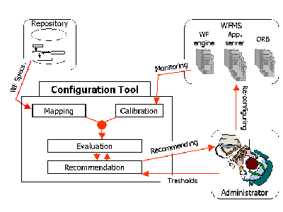

The Auto-Configuration Tool of Mentor-lite
1 Functionality and Architecture
The configuration tool consists of four components:
- the mapping of workflow specifications into the tool's internal models,
- the calibration of the internal models by means of statistics from monitoring the system,
- the evaluation of the models for given input parameters, and
- the computation of recommendations to system administrators and architects, with regard to specified performability goals.
 |
| (click on figure to enlarge) |

For the mapping the tool interacts with a workflow repository where the specifications of the various workflow types are stored. In addition, statistics from online monitoring may be used as a second source. The configuration tool translates the workflow specifications into continuous-time Markov chain (CTMC) models [1]. For the evaluation of the models, additional parameters may have to be calibrated; for example, the first two moments of the server-type-specific service times have to be fed into the models. This calibration is again based on appropriate online monitoring. So both the mapping and calibration components require online statistics about the running system. Consequently, when the tool is to be used for configuring a completely new workflow environment, many parameters have to be intellectually estimated by a human expert. Later, after the system has been operational for a while, these parameters can be automatically adjusted, and the tool can then make appropriate recommendations for reconfiguring the system.
The evaluation of the tool's internal CTMC models is driven by specified performability goals. System administrators or architects can specify goals of the following two kinds:
- a tolerance threshold for the mean waiting time of service requests that would still be acceptable to the end-users, and
- a tolerance threshold for the unavailability of the entire WFMS, or in other words, a minimum availability level.
The tool can invoke these evaluations either for a given system configuration (or even a given system state if failures are not a major concern), or it can search for the minimum-cost configuration that satisfies both goals, which is discussed in more detail later on this page. The cost of a configuration is assumed to be proportional to the total number of servers that constitute the entire WFMS, but this could be further refined with respect to different server types. Also, both kinds of goals can be refined into workflow-type-specific goals, by requiring, for example, different maximum waiting times or availability levels for specific server types.
The tool uses the results of the model evaluations to generate recommendations to the system administrators or architects. Such recommendations may be asked for regarding specific aspects only (e.g., focusing on performance and disregarding availability), and they can take into account specific constraints such as limiting or fixing the degree of replication of particular server types (e.g., for cost reasons).
So, to summarize, the functionality of the configuration tool comprises an entire spectrum ranging from the mere analysis and assessment of an operational system all the way to providing assistance in designing a reasonable initial system configuration, and, as the ultimate step, automatically recommending a reconfiguration of a running WFMS.
2 Greedy Heuristics Towards a Minimum-cost Configuration
The most far-reaching use of the configuration tool is to ask it for the minimum-cost configuration that meets specified performability and availability goals. Computing this configuration requires searching the space of possible configurations, and evaluating the tool's internal models for each candidate configuration. While this may eventually entail full-fledged algorithms for mathematical optimization such as branch-and-bound or simulated annealing, our first version of the tool uses a simple greedy heuristics.
The greedy algorithm iterates over candidate configurations by increasing the number of replicas of the most critical server type until both the performability and the availability goals are satisfied. Since either of the two criteria may be the critical one and because an additional server replica improves both metrics at the same time, the two criteria are considered in an interleaved manner. Thus, each iteration of the loop over candidate configurations evaluates the performability and the availability, but adds servers to two different server types only after re-evaluating whether the goals are still not met. This way the algorithm avoids "oversizing" the system configuration.
References
[1] M. Gillmann, J. Weissenfels, G. Weikum, A. Kraiss: Performance and Availability Assessment for the Configuration of Distributed Workflow Management Systems, in Proceedings of International Conference on Extending Database Technology (EDBT), Constance, Germany, 2000.